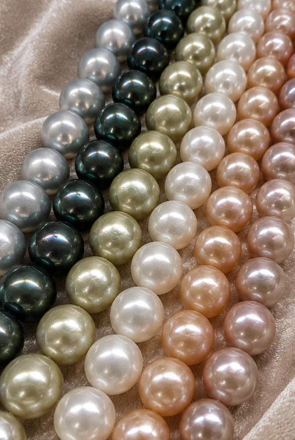
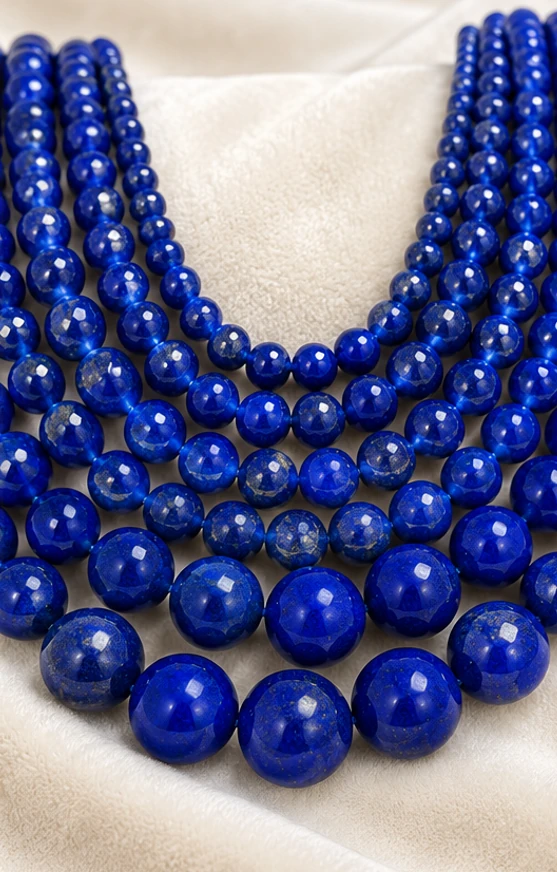

Perlen & Perlenstränge
Süßwasser-, Akoya-, Tahiti-, Südsee- und Keshi-Perlen.
B2B · Edelsteine · Mineralien · Perlen
Ihr zuverlässiger B2B-Partner für Edelsteine, Mineralien & Perlen aus Deutschland.
Internationale Beschaffung. Ausgewählte Qualität. Verlässliche Partnerschaft.



MERVELLE GEMS
MERVELLE GEMS steht für langjährige Erfahrung und Expertise im Handel mit Edelsteinen, Farbsteinen, Mineralien und Perlen.
Von Deutschland aus arbeiten wir mit einem gewachsenen internationalen Netzwerk aus Produzenten, Lieferanten und Handelspartnern zusammen. So bieten wir Geschäftskunden ein vielseitiges Sortiment und können zugleich gezielt auf individuelle Beschaffungswünsche eingehen.
Ob Rohsteine, geschliffene Steine, Edelsteinstränge oder Perlen – wir verbinden internationale Beschaffungsmöglichkeiten mit persönlicher Betreuung, wettbewerbsfähigen Handelskonditionen und einer zuverlässigen Abwicklung.
Unser Sortiment
Perlen, Edelsteinstränge, Rohsteine, Mineralien, geschliffene Farbsteine und lose Beads – in unterschiedlichen Qualitäten, Formen, Größen und Verarbeitungsstufen.
Süßwasser-, Akoya-, Tahiti-, Südsee- und Keshi-Perlen.
Unter anderem Aquamarin, Amethyst, Turmalin, Granat, Citrin, Peridot, Morganit, Rosenquarz und Lapislazuli.
Unter anderem Lapislazuli, Aquamarin, Turmalin, Peridot, Beryll, Citrin, Topas, Morganit und Kunzit.
In verschiedenen Schliffen, Formen, Farben, Größen und Qualitätsstufen.
Für Schmuckherstellung, Handel, Design und individuelle Kollektionen.
Die gezeigten Bilder sind Sortimentsbeispiele. Verfügbarkeit, Herkunft, Behandlung, Maße und Qualität werden für konkrete Anfragen individuell bestätigt.
Internationale Beschaffung
Unser Angebot endet nicht beim aktuellen Sortiment. Über unser internationales Netzwerk prüfen wir gezielt Beschaffungsmöglichkeiten für bestimmte Steinarten, Schliffe, Farben, Größen, Qualitäten und Mengen.
Beschaffung
Gewachsene Beziehungen zu Produzenten, Lieferanten und Handelspartnern eröffnen Zugang zu unterschiedlichen internationalen Beschaffungsmärkten.
Auswahl
Ob roh oder geschliffen, lose oder als Strang: Farbe, Form, Größe, Qualität und Menge werden auf den konkreten Bedarf abgestimmt.
Flexibilität
Ist die gewünschte Ware nicht verfügbar, prüfen wir passende Alternativen und individuelle Beschaffungsmöglichkeiten über unser Netzwerk.
Partnerschaft
Persönliche Betreuung, kurze Kommunikationswege und professionelle Abwicklung schaffen die Grundlage für langfristige Geschäftsbeziehungen.
Beschaffungsanfrage sendenWarum MERVELLE GEMS?
Erfahrung, Marktkenntnis und ein Verständnis für die Anforderungen professioneller Geschäftskunden bilden die Grundlage unserer Arbeit.
Gewachsene Beziehungen zu Produzenten, Lieferanten und Handelspartnern ermöglichen Zugang zu internationalen Beschaffungsmärkten und besonderen Produkten.
Persönliche Betreuung, kurze Kommunikationswege und eine professionelle Abwicklung schaffen die Basis für langfristige Geschäftsbeziehungen.
Über uns
MERVELLE GEMS ist ein international ausgerichtetes Handelsunternehmen mit Sitz in Deutschland und langjähriger Erfahrung im Handel mit Edelsteinen, Farbsteinen, Mineralien und Perlen.
Unser Anspruch ist es, die Möglichkeiten internationaler Beschaffung mit der persönlichen Erreichbarkeit und zuverlässigen Abwicklung eines Handelspartners aus Deutschland zu verbinden.
Qualität & Verantwortung
Professioneller Handel bedeutet für uns mehr als die Beschaffung der richtigen Ware. Wir legen Wert auf Qualität, verlässliche Geschäftsbeziehungen, verantwortungsvolle Beschaffung und größtmögliche Transparenz innerhalb unserer Lieferbeziehungen.
Bei der Auswahl unserer Geschäftspartner berücksichtigen wir neben Qualität und Wirtschaftlichkeit auch verantwortungsvolle Produktions- und Beschaffungsbedingungen. Soweit entsprechende Informationen für die jeweilige Ware verfügbar sind, schaffen wir Transparenz hinsichtlich Herkunft und Behandlung.
Individuelle Beschaffung
Teilen Sie uns Ihre Anforderungen mit. Ist die gewünschte Ware nicht in unserem aktuellen Sortiment verfügbar, prüfen wir passende Beschaffungsmöglichkeiten und erstellen Ihnen ein individuelles Angebot.
Kontakt
Sie interessieren sich für unser Sortiment oder suchen einen bestimmten Stein? Sprechen Sie uns an. Gerne beraten wir Sie persönlich und prüfen Ihre Anfrage individuell.